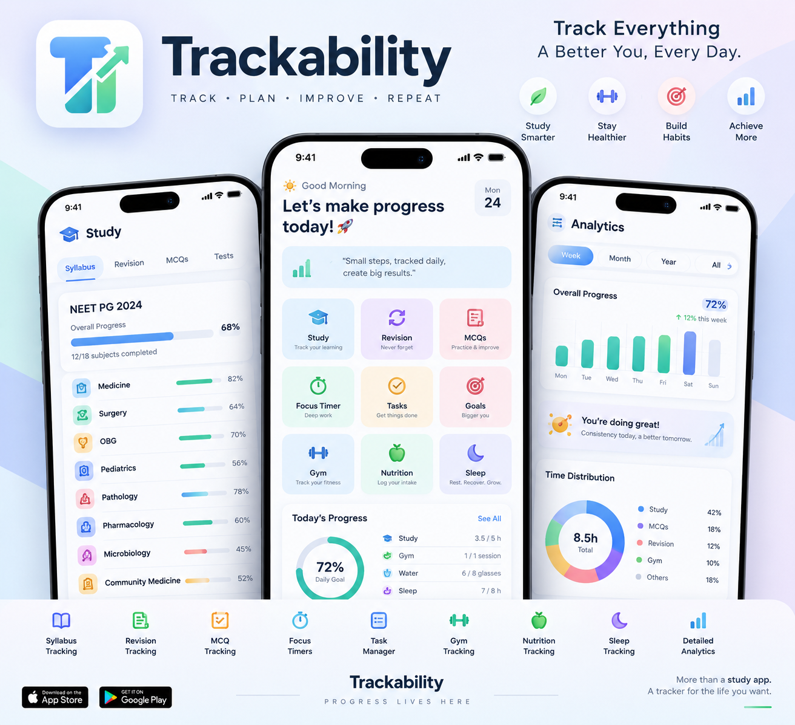

Plan. Focus.
Track. Become.
A unified workspace for students to plan their preparation, focus deeply, practice consistently and understand their progress.

Your preparation shouldn't live in five different apps.
Planner here. Timer there. Syllabus in a PDF. MCQs in another tracker. Gym and sleep somewhere else. Trackability brings the pieces into one connected workflow.
Scattered planning
Turn intentions into dated tasks, repeatable schedules and actual time blocks.
Scattered practice
Keep MCQs, mini tests, Grand Tests, revision and mistakes connected to your preparation.
Scattered progress
Study is only one part of preparation. Track sleep, gym, nutrition and long-term trends too.
One preparation. One place.
Trackability is designed as a loop rather than a collection of disconnected tools.
Track the student, not just the study session.
Your preparation has a body, a routine and a life around it. Trackability keeps those signals visible alongside academic progress.
Syllabus · revision · MCQs · GTs · mistakes
Tasks · time blocks · focus · Pomodoro
Sleep · gym · protein · calories

Built to adapt to your preparation.
Trackability currently supports NEET PG and NEET UG workflows, while the underlying approach is designed for different competitive-exam structures.
NEET PG
Revision, MCQs, Grand Tests, subject/chapter tracking and time-blocked preparation.
NEET UG
Chapter-level syllabus, question practice, revision and consistent daily tracking.
Flexible structure
Custom subjects, chapters and marking schemes make the system adaptable beyond one exam format.
One workflow instead of a stack of trackers.
| Need | Typical setup | Trackability |
|---|---|---|
| Planning | Calendar / notes | Tasks + time blocks + repeat |
| Focus | Separate timer | Focus + Pomodoro + history |
| Syllabus | PDF / checklist | Subjects + chapters + revision + MCQs |
| MCQs & tests | Separate logs | Repository + history + GT analytics |
| Personal routine | Separate habit apps | Sleep + gym + protein + calories |
| Progress | Manual review | Statistics + historical trends |
Ready to make your preparation visible?
Open the working Trackability app and start building a preparation system around your real day.
Begin Your Journey ↗